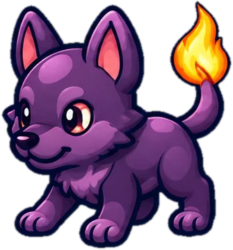

 FireDark
FireDarkTap a stage to read its story.
Sootpup is a compact purple-dark wolf pup with a small flickering flame at the tip of its tail and wide alert eyes. It was born at the edge of the Dark Forest where the last firelight reaches, and it has learned to carry its tail-flame low so as not to attract the forest's older shadows. It watches everything with intent intelligence, memorizing each new voice it hears before the flame-pup forgets - which never happens, according to the guardians who first befriended its kind.
Field note: Sootpup's tail-flame flickers three times whenever it recognises a voice it has not heard for more than a week.
Dark Forest. Sootpup and its family are found in the Dark Forest. See everyone who lives there.
Share a Bond Food that matches its types to become friends. Sootpup loves:
A Bond Food is not a trick. It joins your spirit with the Kimuro's spirit, and only when it chooses you.
Print the Kimuro adventure packs: mazes, cards, a board game and Bond Mark medals.
See the printable packs